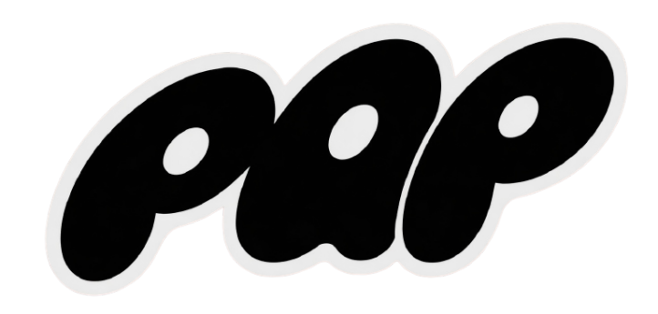
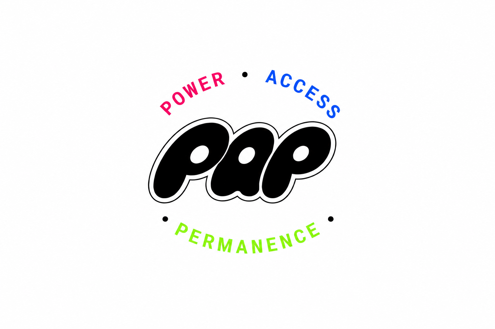

Short & Ownable: One syllable; Punchy.
Acronym with Depth: Means nothing without a story.
Culturally Flexible: Streetwear, Sports, Advocacy, Event Spaces.
Grows with Brand: Whether a tee, a non-profit training program, or community pop-up, PAP sits above it all.
PAP is a brand that stems from the ideas of Power, Access, Permanence, where the focus is on improving the lives of everyone. There is a strong emphasis on being a community-powered equity & access brand operating at the intersection of sport, permanence, and social movement.